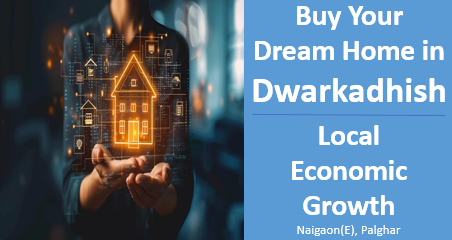

Buy Your Dream Home in Dwarkadhish:Infrastructure Drives Local Economic Growth
Financial factors
Financial development in Naigaon
Naigaon has experienced significant economic growth in recent years, driven by a boom in industrial and commercial developments. This has led to an increase in employment opportunities, benefiting residents across various sectors. The area's growth has also improved the quality of life, with better infrastructure, modern amenities, and enhanced access to services, making it a more attractive place to live and work.
Job prospects
The growth of industrial and commercial sectors in and around Naigaon has significantly boosted the region's economy and job market. This expansion has led to the creation of a multitude of employment opportunities, attracting professionals from various fields. Many individuals working in Mumbai find Naigaon to be an ideal place to live due to its peaceful surroundings and convenient access to the city. The strategic location of Naigaon, with its proximity to Mumbai, allows residents to enjoy a more tranquil lifestyle while still being within reach of their workplaces. As a result, Naigaon has become a popular residential area for professionals seeking a balance between work and quality of life.
Rise in Industrial and Economic Activities
The emergence of industrial and commercial developments in Naigaon has played a significant role in boosting the area's economic prosperity. The influx of businesses and enterprises has spurred growth, creating a dynamic environment that attracts both residents and investors. This surge in activity has positively impacted the real estate market, driving demand for properties in the region. As a result, Naigaon presents an opportune time for investment, offering potential for high returns in a rapidly developing area.
Conclusion
In conclusion, the rapid industrial and commercial growth in Naigaon has transformed the area into a thriving hub of economic activity. This development has not only contributed to the region's prosperity but has also made it an attractive destination for both residents and investors. With the real estate market flourishing, Naigaon presents a unique opportunity for investment, promising long-term growth and returns. As the area continues to evolve, it is poised to become a key player in the broader economic landscape.
Contact us
+91 72088 43484 / +91 72088 43487
kkcreateandbiuld@gmail.com
Radha Nilaya, Plot No. 164/2,
Bapane Village, Chandrapada Road,
Naigaon (E) - 401208,
Maharashtra, India.